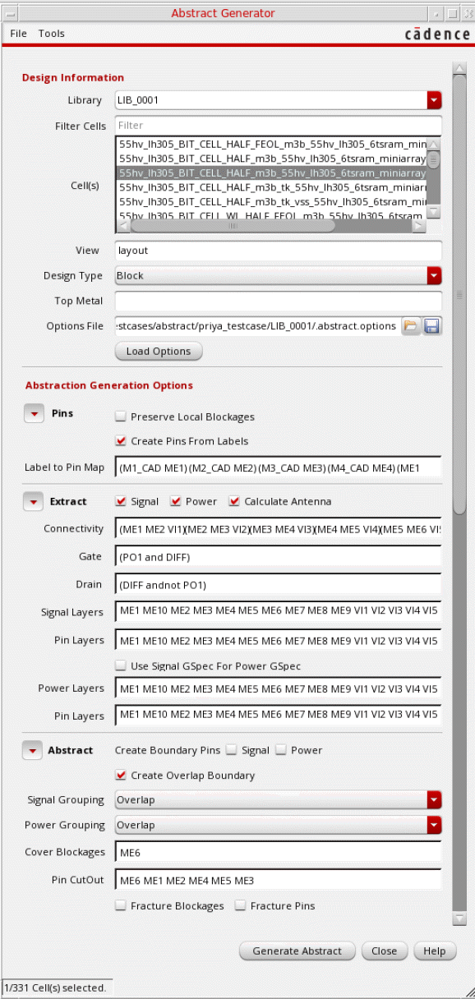

Specifying Design Information in the Abstract Generator
You can load values in the Abstract Generator form, run the Abstract Generator steps and view the results during the abstract generation process. To initialize the fields in the Abstract Generator form:
-
In the CIW, choose Tools - Abstract Generator.
The Abstract Generator form is displayed. -
Select a library.
The library list is read in from thecds.libfile located in the run directory, and libraries are listed in an alphabetical order. When you select a library, the Cell(s) list is automatically populated. -
In the Filter Cells field, you can filter out cells based on their names. For example, type
topto filter out cells that contain the string in their name. -
From the Cell(s) list, select the required cells. Use one of the following selection methods:
- Select one or multiple cells by clicking their names.
- Select multiple consecutive cells by clicking a cell and dragging the cursor across all the cells to be selected without releasing the mouse button. Release the mouse button after all the required cells have been selected.
-
Select all cells by using the
Ctrl+Abindkey.
The number of cells selected is displayed in the status bar.
To deselect cells: - In the View field, specify the view name in which you want to create abstracts.
- From the Design Type drop-down list, select a design type. Design type indicates the type of cells to be processed in this abstract run: Block (default), Core, IO, or Corner.
-
(Optional) Specify a Top Metal layer. If you specify a top metal layer, the layers listed in the Extract and Abstract steps are automatically restricted to the specified top metal layer. This means that abstract shapes are generated only for objects on the specified layer and its lower layers, and not for any others. For example, if Top Metal is set to
M3, then the other layer options are reset to include only layersM3and its lower layers. Abstract shapes are generated only for objects on these layers. - In the Options File field, specify the path from where Abstract Generator loads the options.
- Click Load Options.
Abstract Generator loads the options file in the following order:
-
The options file (
.abstract.options) from the <current working directory>/.abstract/<library name>directory is loaded. If not available in the above location, Abstract Generator reads the file first from the attached technology library directory and then from the design library directory. - The file specified in the Options File field in the Abstract Generator form is loaded. If the same options are available in the next file loaded, the options are overwritten accordingly.
Related Topics
Specifying Design Information in the Abstract Generator
Viewing Results in the Abstract Generator Form
Return to top